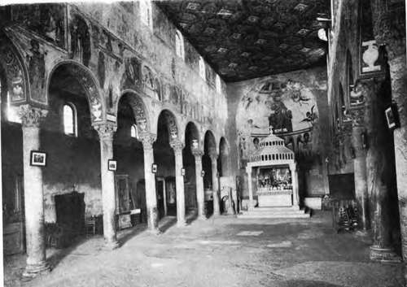

Historical Sketch. Part 3
Description
This section is from the book "Mural Painting", by F. Hamilton Jackson. Also available from Amazon: Mural Painting: -1904.
Historical Sketch. Part 3
The walls are covered with frescoes, some of which have suffered very much, but the subjects on the nave walls and in the apse are tolerably preserved. The Last Judgement, which occupies the west wall, is a good deal damaged, but is the strongest of the compositions. The others are subjects from Old and New Testament history, figures of prophets, etc., and in the semi-dome of the apse is a colossal figure of Christ, seated, and blessing the people, with the Holy Ghost above and the symbols of the Evangelists round, while below are the archangels Michael, Gabriel, and Raphael with circular nimbi, and two other figures with square nimbi (which shows that they were living at the time), Desiderius or Pope Victor III. with a church in his hand, and S. Benedict holding a book with the beginning of the Benedictine rule, though why S. Benedict should have a square nimbus one does not understand. On the summit of the hill is another little church which is also decorated with ancient frescoes.
Several French and German painters of the eleventh century were greatly celebrated, and attained high ecclesiastical positions, for most of them were cloistered artists. S. Bernward became bishop of Hil-desheim; he died in 1023. Adelard II. of Louvain, was elected abbot of S. Tron in 1055. Herbert and Roger of Rheims remained simple artists, but Thiemon, painter, sculptor, and professor of literature, was made archbishop of Salzburg in 1090. There were numbers of less celebrated painters also. To return to Italy. Giunta Pisano was a friend of Frate Elia, the builder of S. Francesco at Assisi, and certainly painted in that building; he was, perhaps, the teacher of Cimabue. Vasari's patriotic assertion that Italian painting commenced in Florence with the latter has often been disproved, but it may be worth while to give here some further details, which show that other parts of Italy had priority over Florence in this matter, though one must acknowledge that the Florentines showed greater aptitude for progress in the art than their neighbours, who started before them in the race. At Eeggio, in the Emilia, there were painters living in 1096 and 1103, and a "Maestro Ardimento99 is mentioned as working there in 1100; on the upper portion of the facade of the cathedral, which dates from the twelfth century, there are still remains of early paintings. The facade of the cathedal at Parma (finished in 1106) was also painted, and Fra Salimbene records that Guidolino da Enzola was much put out by the boys throwing stones at the paintings and sculptures of the cathedral and baptistery. He used to run after them and beat them " as if he had been appointed custodian, though he only did it from zeal to God and divine love." The paintings in the baptistery are rather later—of the first half of the thirteenth century—and are signed Nicolk of Reggio. The figures have movement and attitudes of passion, the difficulty of rendering the expression of the face being got over by giving the bodily gestures which express emotion almost as fully. A document of 1068 mentions Fr. Everard, priest and painter, and Fra Salimbene says that in 1233 every parish had a standard with its patron saint painted on it, that on the standard of the Parmese taken in 1248 to the siege of Vittoria, Frederick the Second's new town, was the effigy of the Madonna crowned by Jesus, and that above the covering of a lamp of the confraternity of S. Francesco were to be seen the Apostles coloured. At Bologna a painter, Gundulfus, signs as witness to a public contract as early as 1090, and the anonymous " p. fwhose pictures are now in the Crucifixion Church of S. Stefano, dated them 1113 and 1115, according to the historians who saw them in their original position; and in the time of Malvasia (1686) many paintings existed dated from 1173 to 1217. He asserts that at Bologna they no longer followed the Greek tradition long before it was abandoned in Florence, perhaps owing to the law schools, where at the end of the twelfth century 14,000 students attended Azzone's lectures on Roman law, and where in consequence there was a large school of writers and miniaturists, for it was comparatively easy to repeat on a large scale what had been painted small in the books. Odofredus, writing in the middle of the thirteenth century, says "our writers nowadays have become painters, our painters writers," referring to the school of miniature painters. There is a notice of 1250 regarding certain paintings which were perishing in the Communal palace, representing the taking of the castle of Roffeno (which happened in 1243). They were to be removed and the surface covered with marble instead, but the order was cancelled shortly after and their restoration commanded. In S. Stefano are a few remains of Romanesque paintings of the twelfth century, and there are some of the next century in other places, especially above the sarcophagi outside S. Giacomo. Names of painters of the thirteenth century are recorded at Ravenna and Rimini, and at Padua in 1271 the podest&, Tommaso Giustiniani, ordered the pictures already existing in the Palazzo del Ragione to be whitened over and other figures painted above the secretaries' seat. In 1286 Vincenzo qtiondam Bartoloto, of the town of Cambroso, in his will orders payment to be made to the painters who, in the churches of Rosara and Cambroso, had painted S. Benedict and S. Daniel. An amusing and a terrible incident which occurred in Bologna show that painters were common enough a little later. In. 1293 the podesti proclaimed the prohibition of arms, and engaged a painter to paint the prohibited objects on the wall of the Palazzo Pubblico. At night, after the " terza suono," the third ringing of the bell, had emptied the streets of people (for they had to go home then as they did at Viterbo), the painter made a little scaffold and commenced painting, with a boy holding a lantern to light him at his work. All at once a certain Giovanni di Geminiano ran up, took a brush, scrabbled over what was done, snatched the lantern from the boy, broke it, and ran away. He was taken subsequently and condemned to prison and a fine of twenty-five lire. In 1305 Giacomo di Calusco killed his son for marrying a woman with whom he was in love. He was taken and tortured horribly, and the podesti had the execution painted to add to his gallery of such things " ad perpetuam rei memoriam".
Interior of the Church of S. Angelo in Formis, Capua.
Continue to: